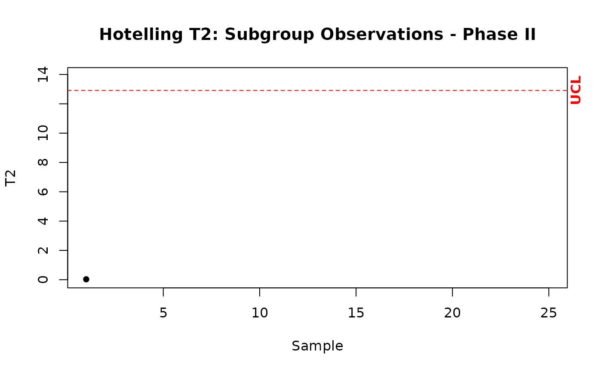
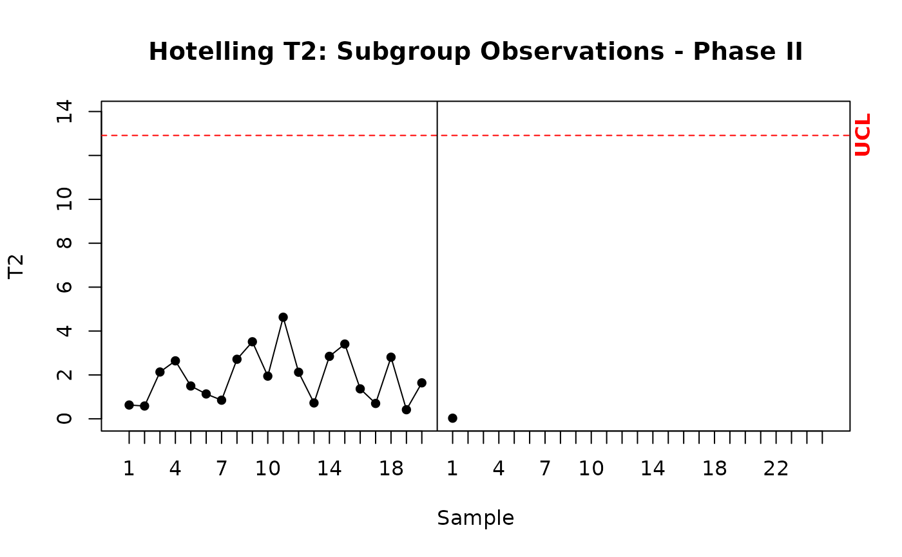
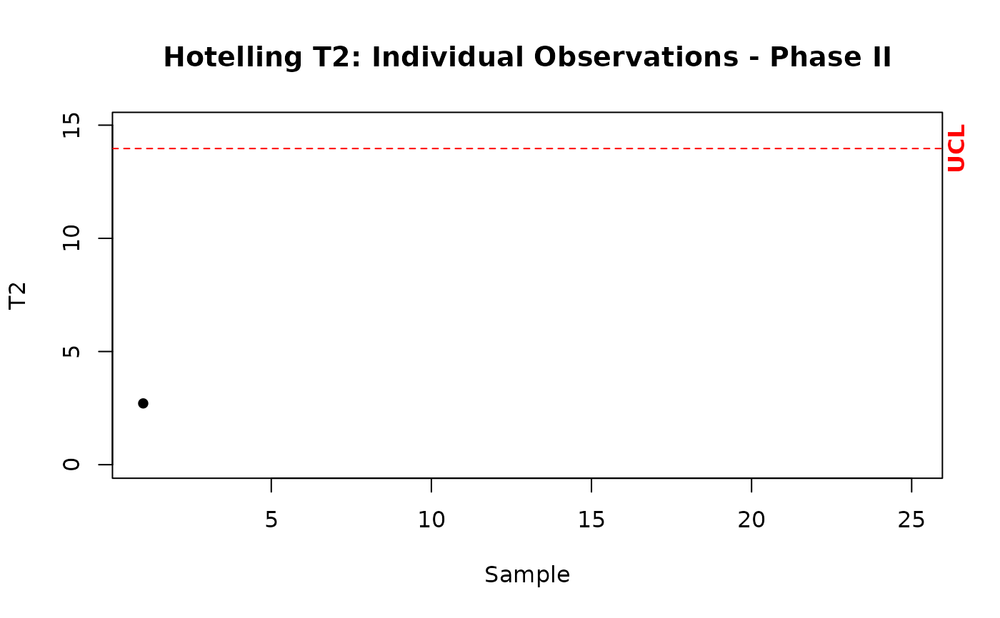
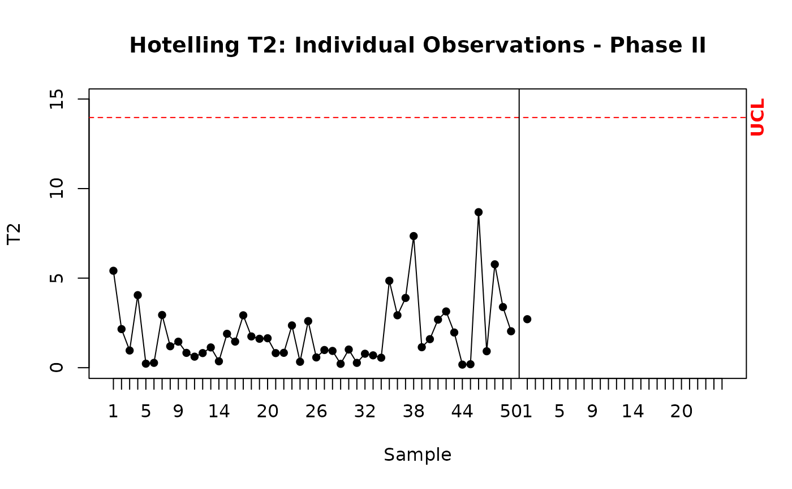

Builds the sub group phase II Hotelling control chart.
Arguments
- T2II
A vector with the value of T2 statistic for one sample.
- m
The number of samples generated previously in data.1.
- n
The size of each sample used previously in data.1. If they are individual observations, use n = 1.
- j
The index of the current sample.
- t
The maximum value of the x axis.
- p
The dimension used previously in function data.1.
- datum
The data set used in phase I.
- stats
The auxiliary statistics created by the function stats.
- T2
The Hotelling T2 statistic for multivariate observations at phase I created by the function T2.1.
Details
It builds the Hotelling T2 control chart for multivariate normal data to be used in the operational phase (known as phase II); the control limits are based on the F distribution.
References
Montgomery, D.C.,(2008). "Introduction to Statistical Quality Control". Chapter 11. Wiley
Examples
mu <- c(5.682, 88.22)
Sigma <- miscTools::symMatrix(c(3.770, -5.495, 13.53), 2)
datum <- data.1(20, 10, mu, Sigma)
estat <- stats(datum, 20, 10, 2)
datum2 <- data.2(estat, 10, p = 2)
T2II <- T2.2(datum2, estat, 10)
# For the first sample j = 1. T2II is a vector with the value of the first T2 statistic.
cchart.T2.2(T2II, 20, 10, 1, 25, 2)

# Same of the above, but now showing the phase I data set.
cchart.T2.2(T2II, 20, 10, 1, 25, 2, datum = datum)

#Example with individual observations
datum <- data.1(50, 1, mu, Sigma)
estat <- stats(datum, 50, 1, 2)
datum2 <- data.2(estat, 1, p = 2)
T2II <- T2.2(datum2, estat, 1)
# For the first sample j = 1. T2II is a vector with the value of the first T2 statistic.
cchart.T2.2(T2II, 50, 1, 1, 25, 2)

# Same of the above, but now showing the phase I data set.
cchart.T2.2(T2II, 50, 1, 1, 25, 2, datum = datum)
